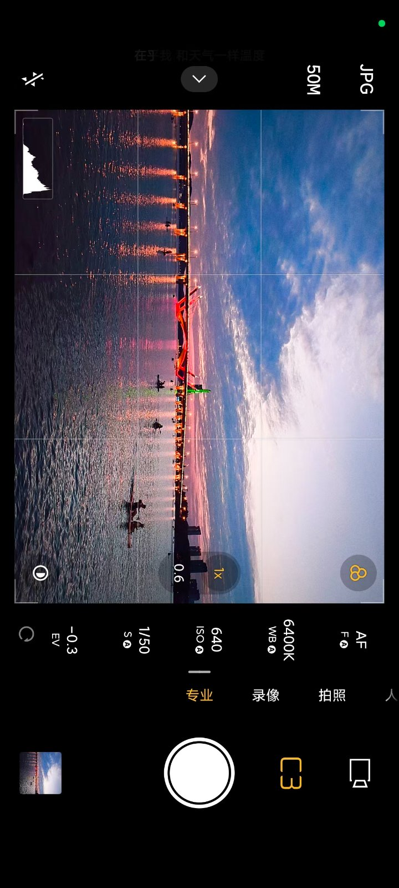
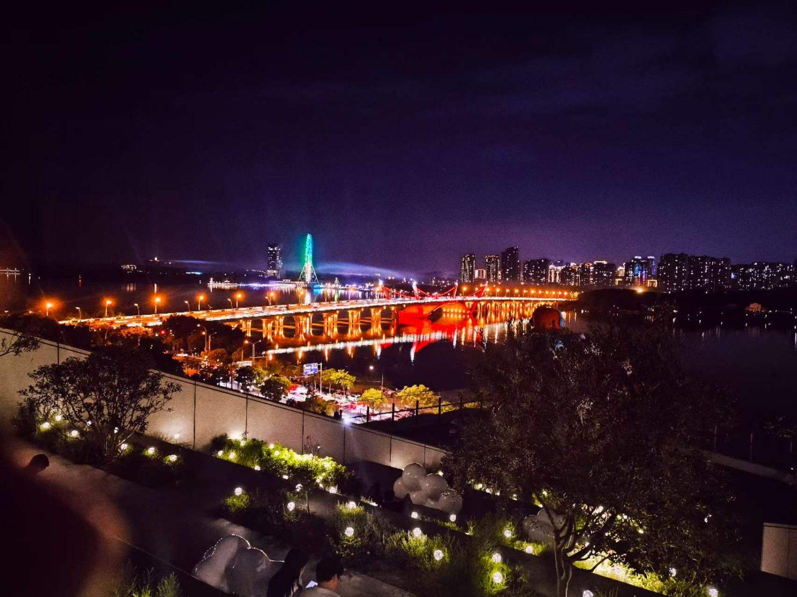
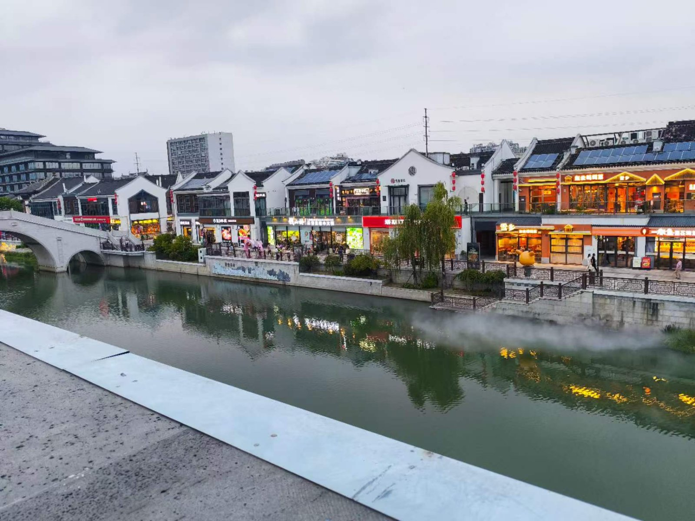
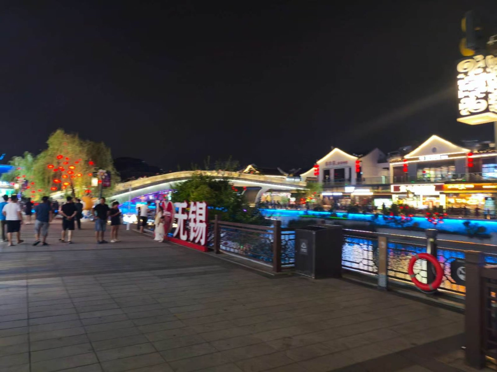

9.15
现在是9月15号 周六（12号）和gjw和lsh一起去了我周五去过的万象城，周日（13号）去了北边的梅里古镇。这个我还是主要上传照片吧。14，15号在宿舍待着没干什么。
当时周六早上我们聊了聊实习到底该怎么办，我等到周三做完加强ct如果可以入职是一定会去入职的，gjw我们让他周一先去入职，先干着说不定会发工资，把路费赚回来，lsh的肝脏那个指数不是短时间内能降下来的，他估计悬，所以如果到了周三 我做了加强ct, lsh再做一遍检查： （1）如果我做完加强ct还不能入职，lsh肝脏指数也下不，来那最简单我们都走。 （2）就怕我能入职，lsh入不了职，gjw是选择留下来和我一起入职还是跟lsh一起走。难题给了他。 （今天在群里聊天的时候gjw说家里意思说让他留下来干活，毕竟他已经入职没必要因为朋友就放弃自己的机会。） 前面《哭，在绝望前》（续）是在今天（15号）完成的 起稿其实是在12号我写了三天（bushi）中间其实情绪好了很多，我写这个实习日记是由于当时心情很崩溃（参考《绝望》）想着写日记宣泄一下也想记录一下（我现在认为生活很需要记录），不知道我到底能不能坚持写下日记。加油，戒不掉。




· 完 ·
写于 2026.09.15 18:17